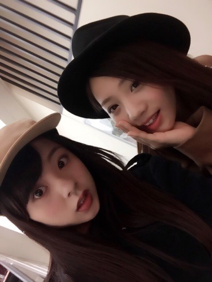
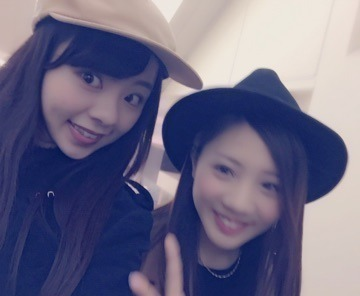
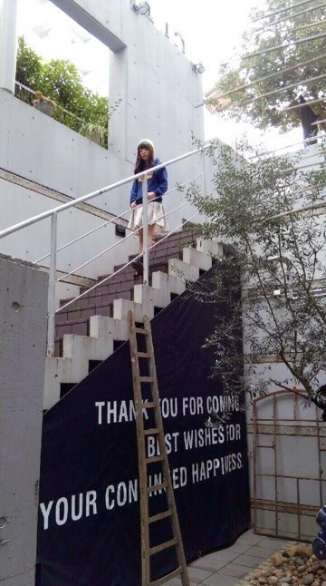
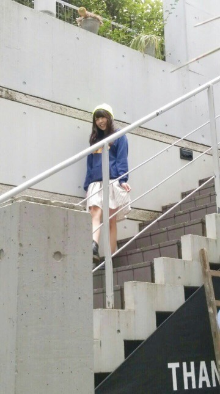
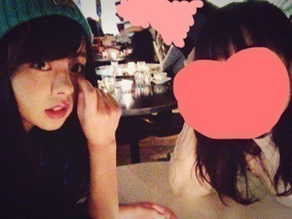
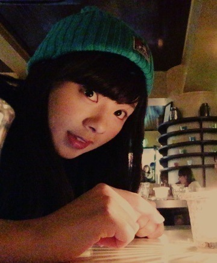

| 2015/03 08 Sun | 最近はずっと1日に ２回お風呂に入るよ 。まに？Rotty？ タイ トルとblog内容全然 関係ないよ。わぁ |
おつかれさまです...。
ろってぃーだよ？ まにだよ？
せっちゃんと！

でねでね、聞ーて聞ーてー 笑
みさがblogでね、
『お弁当のシュウマイを落として困ってたら、松村と若月がシュウマイをくれた！』ってな内容の事書いてたんだけどね,
1番最初にシュウマイあげたの私やもん。ふんっ）））
みさがどっかに行ってる時に私のシュウマイ、みさのお弁当箱に入れたんだもんね！ふんっだぁぁ。。( ´ ▽ ` )ﾉ
夜中にblog読んでて『あれ...まひろもあげたのに...（ ｉ _ ｉ ）笑』って思っててん ははは
っていう話でした
 へへ
へへ
へへ
でねでね,
つい最近の休日に 能条と横浜に遊びに行って来ました！
なにげ私は初めてだったんですよぉ。
中華街！！！ 後みなとみらい！
楽しかったです（＾ω＾）
というより、きっと能條とだからどこに行っても楽しいんだと思います。笑
←（絶対 能條今喜んでるよね）
あみと2人でご飯に行くときは必ずしも、何かしら やらかしてしまいます。。内容は秘密で、、、
で、あみがキャメルコートに黒ハットコーデで来ると知っていたので、
私は黒コートにキャメルcap帽コーデにしてみまし（＾ν＾）笑

ずっと仲良しやでん。

はい！そしてこれが雑誌ELOさんの時,
OFFショット。

やっぱりパーカーは可愛いね（＾ν＾）

昨日は、朝かはとある撮影でした！
朝早かったから15時とかに終わったので、
仕事で必要なものを買い物しに行き、
で それから畠中と美容院に行って来ましたぁ。
カラーしてませぇん♩
元の色に戻してるの。
どんどん髪色黒くなってきたぁ。
トリートメントだけしたよん（＾ω＾）
やっぱり美容院っていーよね！
大好き。
それと、木曜にお友達の舞台に行って来ました！
夢に向かって頑張ってる姿を見て、私は感動し涙が溢れてきました、、
ぐいっと我慢しましたけど。
（顔の隠し方ナイスやろ）笑



今日はこの辺で！
今日も1日頑張ろうね（＾Ｏ＾）
ポジティブ セイ ポジティブ！！！
のし。
コメント(351)
2015/03/08 11:12